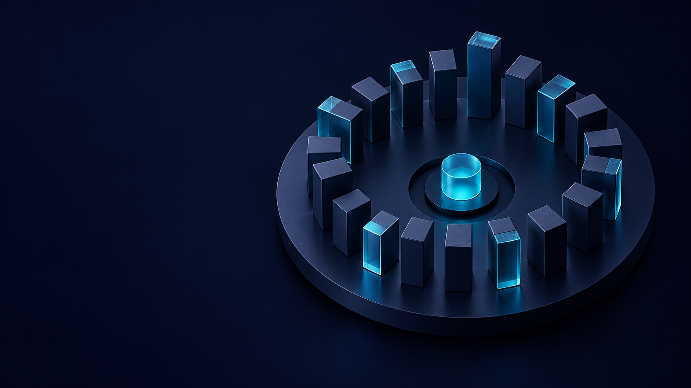
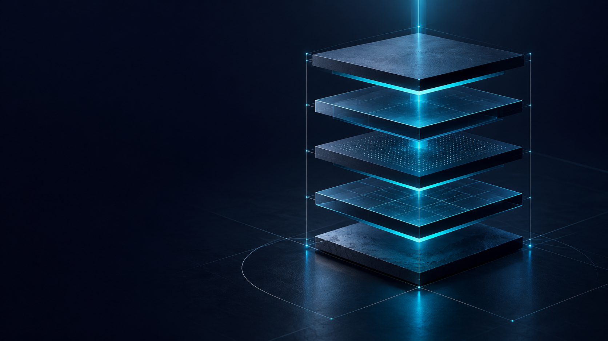
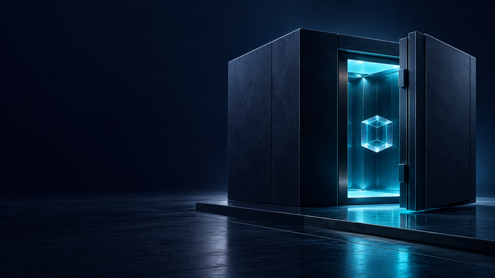
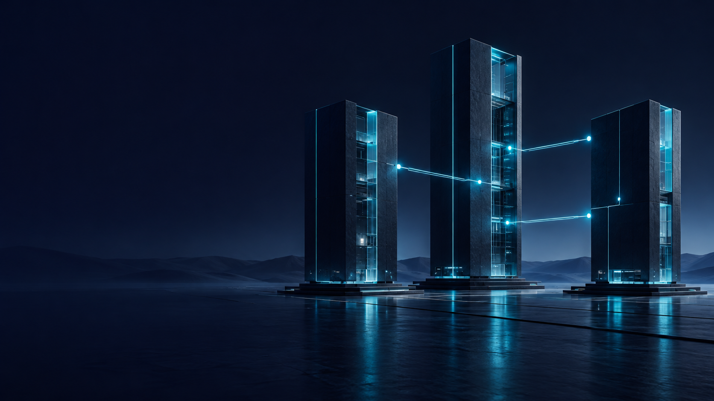

TBCi — брендбук v2.1
30 октября 2026. Выбранный логотип: №7 / Signal. Дополнение: 30 тематических иконок к 16 интерфейсным; всего 46. Все страницы визуального PDF переработаны.
PDF · Каталог активов · Документация сервиса
01 / Система — Brandbook
Версия 2.1 от 30 октября 2026. Пользователь выбрал направление логотипа №7. К существующему набору из 16 интерфейсных иконок добавлены 30 тематических. Переработаны все страницы визуального брендбука.
02 / Смысл — Сложный рынок. Ясная структура.
Предлагаемая платформа бренда; функциональная основа — предоставленные материалы.
Наблюдать. Индекс помогает видеть динамику выбранной корзины рынка.
Понимать. Состав, методология и источники делают показатели объяснимыми.
Действовать осознанно. Цена, комиссия и результат операции видны до подтверждения.
03 / Характер — Один сигнал. Три опоры.
Чистая геометрия в идентичности; выразительные изображения — в коммуникации.
Точность: Прямые сегменты. Ровный штрих. Отчётливые числовые единицы.
Прозрачность: Спокойные панели. Понятные подписи. Видимый источник данных.
Сдержанность: Тёмная основа. Один циановый акцент. Свечение только в иллюстрации.
04 / Логотип — TBCi / Signal 07
Выбранное направление №7 переведено в вектор и нормализовано для использования.
Знак: Три сегмента. Единая толщина. Углы 45°.
Написание: TBC — прописные; i — строчная с бирюзовой точкой.
Мастер: SVG с буквами в контурах. Шрифт устанавливать не нужно.
Основной и светлый логотипы имеют бирюзовую точку над i. Ствол i и другие буквы не изменены. Одноцветные варианты остаются одноцветными.
Словесная часть нормализованного мастера выполнена Open Sans Bold. Это новый векторный мастер выбранного направления, а не восстановление неизвестного шрифта растровой генерации.
05 / Варианты — На тёмном. На светлом. В один цвет.
Использовать готовые файлы, сохраняя знак, пропорции и расстояние до названия.
Основной / cyan + ice
На светлом / deep + ocean
Одноцветный / белый
Одноцветный / тёмный
06 / Построение — Пространство вокруг знака
Охранное поле и минимальный размер относятся к видимой композиции, а не только к границе файла.
Поле: не меньше x со всех сторон.
Знак: от 24 px по ширине.
Композиция: от 120 px; для хедера рекомендуется 160 px.
В печати: от 30 мм.
Не менять наклон, толщину, пропорции и интервал. Не добавлять тень или свечение.
07 / Палитра — Ночь. Глубина. Сигнал.
Нормализованный стандарт sRGB, сформированный по визуальному направлению мудборда.
Void #070A22
Deep #102441
Ocean #0B3559
Signal #00CDEB
ice #F2F7FB
mist #A8BBD2
up #35D36A
down #FF6B7A
warning #FFC76A
08 / Типографика — Типографика без шума
Open Sans: Regular — текст и крупные заголовки; Semibold — акценты; Bold — логотип.
Web-шкала: начертания Regular 400 и Semibold 600, без Light. H1 48/56 px (мобильный 32/40); H2 32/40; H3 24/32; основной текст 16/24; подпись 14/20; микроподпись 12/16. Для чисел — табличные цифры. В заголовках не использовать избыточный верхний регистр.
09 / Сетка — Сетка держит композицию
Базовый модуль 8 px. Контент до 1200 px. Поля от 16 px.
12 колонок: от 1024 px / gap 24 px
8 колонок: 768–1023 px / gap 16 px
4 колонки: до 768 px / gap 16 px
Ступени отступов: 8, 16, 24, 32, 48, 64, 96 px. Карточки: поля 24 px на широком и 16 px на узком экране.
10 / Графика — Геометрия в основе. Свет в акценте.
Сеть: Тонкие связи и редкие узлы по краям композиции.
Грань: Крупные плоскости и ясные направления.
Свет: Фокус на одном объекте, не на каждом элементе.
11 / Интерфейс — Компоненты, которые помогают действовать
Меньше декоративных эффектов в рабочем кабинете. Чёткие состояния и понятные глаголы.
Состояния: default, hover, pressed, focus, disabled, loading, success, error. Primary: Signal с тёмным текстом; hover #36DDF2, pressed #00B5D0. Focus: 2 px Ice с отступом 3 px. Поле всегда имеет подпись.
12 / Данные — Данные важнее впечатления
Учебный ряд для оформления. Не котировка и не обещание доходности.
Показывать источник, период, единицы и время обновления. Пункты индекса не равны цене токена или балансу. Рост/падение различаются знаком, подписью и цветом. У графика нужны текстовые значения и управление с клавиатуры.
13 / Иконки — Интерфейсный набор / 16
SVG + прозрачный PNG. Сетка 24 × 24 px; штрих 1,75 px; единый цвет через currentColor.
Иконки: Индекс, Кошелёк, Корзина, Купить, Продать, Собрать, Разобрать, История, Держатели, Защита, API, Методология, Ребалансировка, Новости, Поиск, Настройки.
SVG-иконки: сетка 24 px, штрих 1,75 px; рекомендуемые размеры 24 и 32 px. Для 16 px нужна оптическая адаптация. У иконки действия есть подпись или доступное имя; область нажатия минимум 44 × 44 px. В таблицах иконки не подменяют финансовые значения.
14 / Иконки — Тематический набор / 01–15
SVG + прозрачный PNG. Сетка 24 × 24 px; штрих 1,75 px; единый цвет через currentColor.
Иконки: Аналитика, Свечи, Распределение, Доли, Доходность, Волатильность, Сравнение, Калькулятор, Формула, Капитализация, Ликвидность, Стакан, Биржа, Обмен, Пополнение.
SVG-иконки: сетка 24 px, штрих 1,75 px; рекомендуемые размеры 24 и 32 px. Для 16 px нужна оптическая адаптация. У иконки действия есть подпись или доступное имя; область нажатия минимум 44 × 44 px. В таблицах иконки не подменяют финансовые значения.
15 / Иконки — Тематический набор / 16–30
SVG + прозрачный PNG. Сетка 24 × 24 px; штрих 1,75 px; единый цвет через currentColor.
Иконки: Вывод, Перевод, Ожидание, Квитанция, Комиссии, Сетевая комиссия, Токен, Блокчейн, Смарт-контракт, Мультиподпись, Ключ доступа, Идентификация, Уведомления, Глобальный рынок, Поддержка.
SVG-иконки: сетка 24 px, штрих 1,75 px; рекомендуемые размеры 24 и 32 px. Для 16 px нужна оптическая адаптация. У иконки действия есть подпись или доступное имя; область нажатия минимум 44 × 44 px. В таблицах иконки не подменяют финансовые значения.
16 / Фоны — Горизонт сигнала
Первый экран, разделитель, обложка. Текст — в верхней половине.
Фон bg-01-signal-horizon. Формат PNG 1672 × 941 px. Сохранять пропорции; не растягивать. При размещении текста проверять контраст итоговой композиции. В плотных таблицах использовать сплошную панель.
17 / Фоны — Поле связей
API, партнёры, подписка. Основной текст — слева.
Фон bg-02-network-field. Формат PNG 1672 × 941 px. Сохранять пропорции; не растягивать. При размещении текста проверять контраст итоговой композиции. В плотных таблицах использовать сплошную панель.
18 / Фоны — Полигональный ландшафт
Методология и обзор рынка. Текст — в верхних двух третях.
Фон bg-03-faceted-terrain. Формат PNG 1672 × 941 px. Сохранять пропорции; не растягивать. При размещении текста проверять контраст итоговой композиции. В плотных таблицах использовать сплошную панель.
19 / Иллюстрации — Иллюстрации / смысл продукта
Шесть самостоятельных изображений. Общая палитра и материалы; разные сюжеты.
Рыночный сигнал — illustrations/art-01-market-signal.png
Корзина активов — illustrations/art-02-balanced-basket.png
Методология — illustrations/art-03-methodology.png
Каждый файл PNG 1672 × 941 px. Изображения без текста и логотипа; подписи, факты и даты накладываются отдельно в макете. Художественное количество объектов и их размеры не являются данными.
20 / Иллюстрации — Иллюстрации / операции и инфраструктура
Шесть самостоятельных изображений. Общая палитра и материалы; разные сюжеты.
Хранение — illustrations/art-04-secure-custody.png
Ребалансировка — illustrations/art-05-rebalancing.png
Связанные данные — illustrations/art-06-connected-data.png
Каждый файл PNG 1672 × 941 px. Изображения без текста и логотипа; подписи, факты и даты накладываются отдельно в макете. Художественное количество объектов и их размеры не являются данными.
21 / Применение — Главная: смысл, показатель, действие
Пример визуальной композиции. Все значения учебные; это не работающий сервис.
Пример главной страницы: новый логотип, фон Network field, понятное описание, индекс в пунктах и один главный призыв «Изучить индекс». Декоративная сеть отделена от зоны данных.
22 / Применение — Одна система на разных носителях
Изображение поддерживает сообщение; знак остаётся плоским и читаемым.
Носители: обложка 1200 × 630 px, квадрат 1080 × 1080 px, презентация 16:9. Поле безопасности — 8% от меньшей стороны. Логотип накладывается отдельным векторным слоем. Не добавлять обещаний гарантированного роста или доходности.
23 / Доступность — Понятно читать. Легко проверить.
Ясный язык, контраст и полные значения — часть фирменного стиля.
Основной текст: от 4,5:1. Контрольные элементы и крупный текст: от 3:1.
Изменение обозначать знаком и текстом; одна окраска недостаточна.
Показывать единицу, период и часовой пояс. Полная сумма доступна по раскрытию или копированию.
Говорить предметно: «Не хватает 0,012 ETH» вместо общей ошибки. Учитывать reduced motion.
Предлагаемый RU-вывод: 12 000,00 USD; 0,833333333 TBCi; −3,72%. EN: 12,000.00 USD; 0.833333333 TBCi; −3.72%. Историческое ТЗ требует точку: изменение локализации нужно согласовать при реализации. Декоративные переходы 160–240 мс, отключение по prefers-reduced-motion.
24 / Комплект — Готово к последовательному применению
Логотип №7 выбран пользователем. Дополнительные правила систематизированы в этой версии.
Комплект: PDF, Word, Markdown, HTML-каталог assets.html, logo/, icons/, backgrounds/, illustrations/, tokens.json, theme.css и generated-assets.json. Приватные данные не используются. Старые макеты и мудборд остаются историческими источниками; старый знак заменён новым в действующих правилах.
Правила файлов
Логотип
Основной SVG · Прозрачный PNG · Векторный PDF



Основной SVG: знак и точка i — #00CDEB, буквы — #F2F7FB. Для светлого фона — знак #0B3559, буквы #102441, точка i #00CDEB. В одноцветных версиях все элементы сохраняют один цвет. Одноцветные варианты — #FFFFFF или #102441. Векторный мастер — нормализация выбранного пользователем направления №7. Open Sans Bold встроен в форму букв как контуры; живого текста в SVG нет.
Иконки
Исходные SVG используют currentColor и начальный цвет #00CDEB. При встраивании inline менять color через CSS; для отдельного img при необходимости подготовить файл с нужным цветом. Не применять opacity для обозначения важного статуса без подписи.
Все 46 иконок — sprite · Реестр

Интерфейсные 16 и новые тематические 30 — разные наборы. Полный список:
- Индекс — index
- Кошелёк — wallet
- Корзина — basket
- Купить — buy
- Продать — sell
- Собрать — compile
- Разобрать — unmake
- История — history
- Держатели — holders
- Защита — security
- API — api
- Методология — methodology
- Ребалансировка — rebalance
- Новости — news
- Поиск — search
- Настройки — settings
- Аналитика — analytics
- Свечи — candlestick
- Распределение — allocation
- Доли — pie-chart
- Доходность — performance
- Волатильность — volatility
- Сравнение — comparison
- Калькулятор — calculator
- Формула — formula
- Капитализация — market-cap
- Ликвидность — liquidity
- Стакан — order-book
- Биржа — exchange
- Обмен — swap
- Пополнение — deposit
- Вывод — withdraw
- Перевод — network-transfer
- Ожидание — pending
- Квитанция — receipt
- Комиссии — fees
- Сетевая комиссия — gas
- Токен — token
- Блокчейн — blockchain
- Смарт-контракт — smart-contract
- Мультиподпись — multisig
- Ключ доступа — access-key
- Идентификация — identity
- Уведомления — notification
- Глобальный рынок — global-market
- Поддержка — support


Изображения и фоны
Файлы сохранены в исходном разрешении генерации: 1672 × 941 px. Не обозначать их как 4K. Использовать с сохранением пропорций; для крупной печати оценить разрешение на финальном размере. Это не бесшовные текстуры.
bg-01-signal-horizon
bg-02-network-field
bg-03-faceted-terrain
art-01-market-signal
art-02-balanced-basket

art-03-methodology

art-04-secure-custody

art-05-rebalancing
art-06-connected-data

Технические параметры
| Токен | sRGB HEX |
|---|---|
| void | #070A22 |
| deep | #102441 |
| ocean | #0B3559 |
| signal | #00CDEB |
| ice | #F2F7FB |
| mist | #A8BBD2 |
| up | #35D36A |
| down | #FF6B7A |
| warning | #FFC76A |
Контент до 1200 px; базовый модуль 8 px. Брейкпоинты: 768 и 1024 px. Сетка 4/8/12 колонок, gap 16/16/24 px. Контролы 48 px, радиус 8 px. Минимальная область нажатия 44 × 44 px. Граница focus 2 px с отступом 3 px.
Лицензии Open Sans и DejaVu приложены. Новые картинки сгенерированы для этого проекта; старые сторонние изображения из архивов не становятся собственными активами от включения в документацию.
Подключение Open Sans
Для HTML Open Sans подключён локально через @font-face в theme.css. Комплект содержит TTF 400/600/700 и лицензию; внешний CDN не нужен. В PDF шрифты встроены. В Word задан Open Sans; для одинакового отображения установите приложенные TTF. Light 300 больше не используется.
Источники и статус
Архив «Новый концепт Лысенко.rar» задаёт палитру и атмосферу. Исторический треугольный логотип заменён по просьбе пользователя. Пользователь выбрал новый вариант №7 из предложенных картинок. Остальные логотипы не входят в действующий набор. Новый графический комплект не подтверждает наличие работающего финансового сервиса, актуальных контрактов или реальных рыночных данных.